|
differential cooler |
|
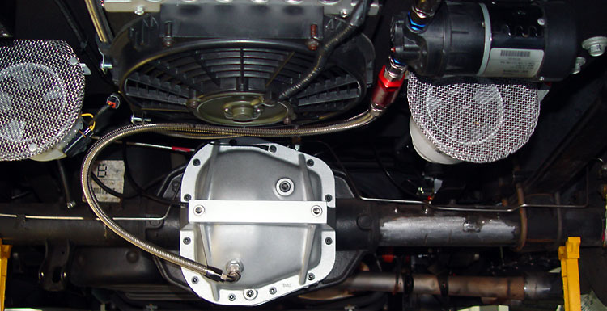 Lightning diff fluid temps routinely go over 200�, even just cruising at highway speeds. Even though the Lightning rear end could probably handle towing the space shuttle through Death Valley in August, I decided that I would feel better with a cooler while flogging the truck on the track. For a street car, full-time use really makes no sense. Most of the time, the fluid is well within acceptable temperatures. So it seemed smarter to have it switched. While a manual switch is simpler, given the temps I was seeing in normal use, and my tendency to space out under the influence of speed-induced adrenaline, I wanted a thermostatic switch. |
|
component selection: |
| 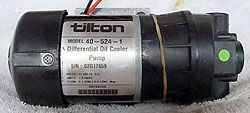The Tilton diff pump (part # 17-522, also apparently sold under the Mocal name) is the only game in town. It is used by all the race teams. It features 1-2 GPM flow rate, is self-priming, has an integral cooling fan, and weighs 3.5 lbs. The Tilton pumps sells discount for about $175. 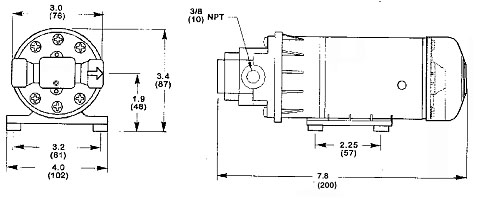 |
| 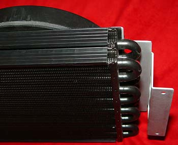I chose a self-contained cooler/fan assembly, the Derale Electra-Cool (model #13800, $130 at Summit Racing). Having a built-in fan and means that it can be mounted anywhere. And the 8-AN fittings save money and allow for two less connections (it is also available in 6-AN and hose barb versions). |
|
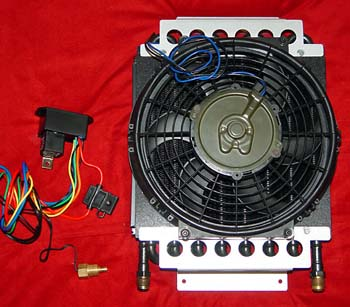The Electra-Cool, while a conventional tube-and-fin design, is more than adequate for the job and will be mounted up under the bed where none of the fins can be harmed. The photo to the left shows the double-row construction. This cooler is undoubtedly overkill. Also shown is the Derale 16749 adjustable thermostatic control unit ($40 at Summit). This is ideal for diff cooler use, as it contains a relay, fuse, and is adjustable from 150 to 240�. Additionally, since it is designed to run two radiator fans, it will easily handle the load of one small fan (10 amps) and the Tilton pump (7 amps) -- and even has two power wires. The probe is a 3/8" NPT thread-in. Finally, the 16749 contains an A/C override switch, which allows the pump to be easily switched from thermostatically controlled to always on for track use. The final -- and, from a cost perspective, the most significant -- decision to be made is whether to go with stainless braided AN lines or rubber hose. I use stainless lines. |
|
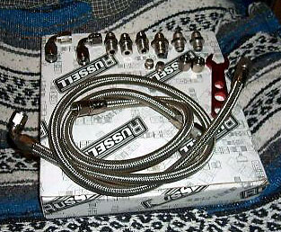So I searched eBay and got a great deal on some 8-AN stuff ($99 for everything shown plus another 13' of hose in the box). The fittings are Russell's Endura (silver) finish, rather than the more common red/blue Earl's. Many use 10-AN hose on diff coolers, but that seemed like overkill to me. Additionally, the whole system will drain back into the diff when it shuts off, so it makes sense to minimize the fluid volume in the lines (with -8, the lines, cooler, and pump hold approximately a quart). For a concise summary of AN sizes and threads, click here. Using -AN hose, the whole shebang costs about $500-600-- $175 for the pump, $50-150 for the cooler, and $150-200 for the AN stuff. But you can shave off over $100 by going with rubber hose. If you want a thermostatic switch, add another $25-40. If this seems steep, you can take consolation in knowing that many more-money-than-sense Porsche, Viper, and 'Vette guys pay $1,000 - $1,800 for essentially the same setup. |
|
installation: |
|
I am plumbing into a TA diff cover/girdle. Since it is thick aluminum, I drilled and tapped for -AN fittings, and then had them welded on. I used a Unibit to bore out the 3/8 NPT->6AN adapter that the fluid is drawn from. That puts a nice cone-shaped opening for easy flow. 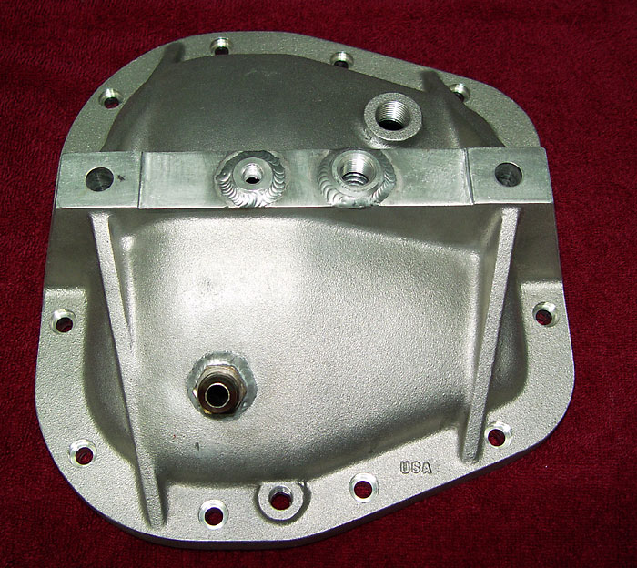 |
| 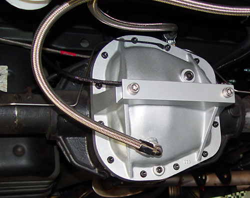I tried to keep the bends to a minimum (for minimum flow restriction) while at the same time using the least hose possible. There is always a tradeoff here. |
|
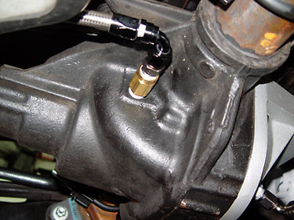Note that some recommend that the cooler be installed ahead of the pump to cool the fluid before it reaches the pump. While normally it is better to pump against pressure, rather than trying to draw fluid against pressure, the Tilton pump has a 266� maximum fluid temperature (300� intermittent) and should easily be able to handle the task either way. The pump should have a pre-filter to prevent large chunks from entering the pump. I used a Peterson #09-0401 because of its compact size. For the stamped steel cover, bulkhead fittings would be required for the drain lines and temp probe (if you want it thermostatically controlled). The return is on the driver's side of the pumpkin. I used a 1/2" check valve with a .3 PSI cracking pressure to keep the fluid from draining back when the pump switches off (there is also a check valve in the pump). It works great. |
| 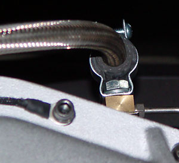Here is the upper hose bracket, made from a Home Depot conduit bracket, with a sleeve of oil hose to prevent chafing: |
|
I mounted the cooler and pump on a 1/8" aluminum plate. I drilled and tapped studs for the components (for easy removal and replacement under the truck), and used Rivnuts for the control box and various clamps. I sprayed the plate with 3M Professional undercoating, but masked off the studs and areas where the trailer hitch bolts and cooler mount to ensure a good ground. Dry-sprayed, the undercoating leaves a nice textured finish. 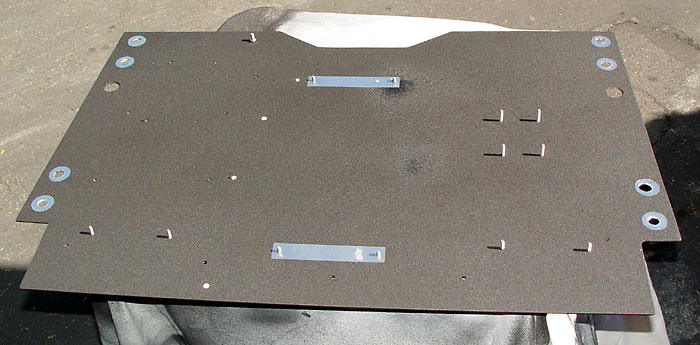 |
|
This is the completed assembly: 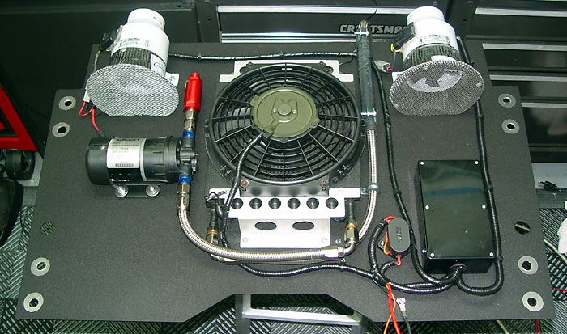 |
| Power is run off of the master disconnect, and ignition on is tapped off of the trailer wiring harness. The red tube is a filter for the pump. The fans are for cooling the rear brakes. |
|
This shot shows the guts of the control box (the wiring was slightly changed after this shot, so don't use it as a wiring diagram): 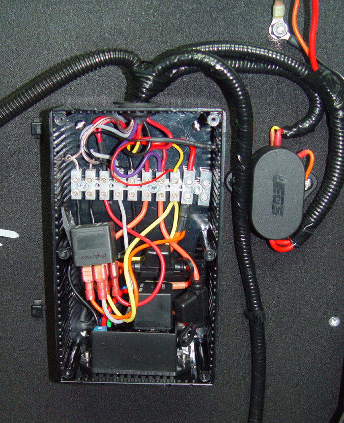 |
| The pump/fan controller is the main item. It has two fan outputs, so one is used for the pump and one for the fan (separately fused). The relay is for the rear brake fans. The harness to the left is for power to the Accusump, the in-cab brake fan switch, and an LED next to the diff temp gauge to tell me when the diff cooler is running. The Jeg's terminal is for the main power and ignition (from the trailer harness). After this picture was taken, I installed a momentary switch to turn the diff cooling system on from under the truck for troubleshooting purposes. |
| 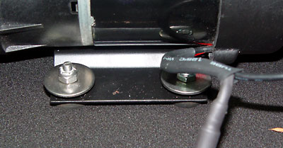To help with vibrations, the pump should be loosely mounted with fender washers. This lets the rubber feet absorb the shocks. |
|
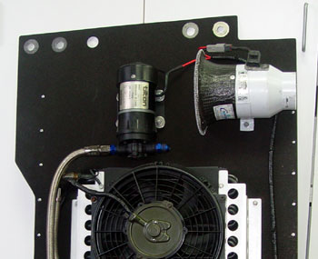After installation, the plate felt just a bit too floppy. So I riveted on some aluminum L channels to the front and rear edges. Helped quite a bit.
|